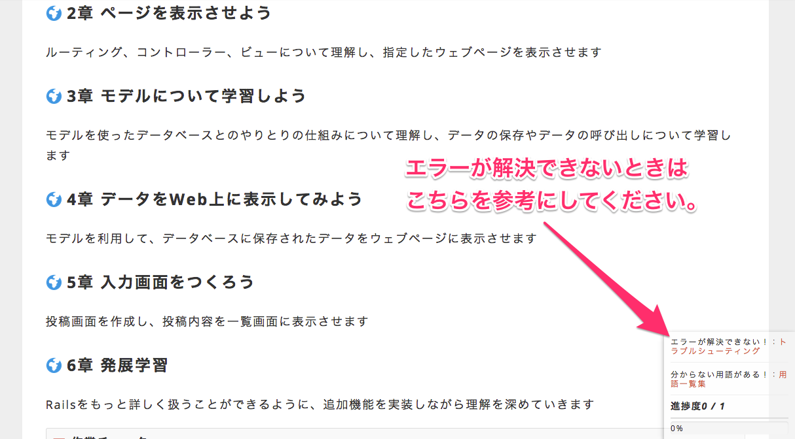

Rails開発ではデータベース(MySQL)やRails自体のインストールなど、まずは開発のできる環境を整える必要があります。
必要な手順は主に以下です。
これらの手順を終えていない方は、以下のリンクから資料を参照し、環境構築を行なってください。
すでに環境構築を終えられている方は、このまま本カリキュラムを進めてください。
このテキストではRuby on Railsについての学習を行ないます。Railsとは、Ruby言語を使ったWebアプリケーション開発のためのフレームワークです。本テキストではRailsを利用して、ひとつのWebアプリケーションを開発して頂きます。
みなさんにはPicTweetと呼ばれるWebアプリケーションを開発して頂きます。PicTweetとは画像と文字をみんなで投稿していくシンプルなサービスです。イメージをつかむためにも、ぜひ一度Pictweetにアクセスして利用してみてください。
Webアプリケーションの実体は、プログラムが記述されたファイルの集合であるディレクトリです。要するに、フォルダとしてまとまった状態にある、ということです。
アプリケーションというと、LINEやFacebookのように一つの塊をイメージされる方が多いと思います。
RailsでつくるWebアプリケーションは多数のファイルで構成されています。多数のファイルのうち、どれか一つがアプリケーションとして動くのではなく、ファイル全体が１つのアプリケーションとして動きます。
兎にも角にもまずは、自身のPC上で動作するWebアプリケーションを作成する必要があります。この段階のことを、ローカル環境でのWebアプリケーション開発などと呼びます。
これを、インターネットを経由して誰でもアクセス可能であるPC(サーバーと呼びます)に設置します。すると、世界中の人々がそのWebアプリケーションを利用することができるようになります。
本カリキュラムでは、ローカル環境でのWebアプリケーション開発を行っていただきます。
新規Railsアプリケーションやデータベースの作成を行ない、開発のための準備を行ないます
ルーティング、コントローラー、ビューについて理解し、指定したウェブページを表示させます
モデルを使ったデータベースとのやりとりの仕組みについて理解し、データの保存やデータの呼び出しについて学習します
モデルを利用して、データベースに保存されたデータをウェブページに表示させます
投稿画面を作成し、投稿内容を一覧画面に表示させます
Railsをもっと詳しく扱うことができるように、追加機能を実装しながら理解を深めていきます
railsのエラーが表示されて解決できないときは、railsのトラブルシューティングを一度ご覧ください。
トラブルシューティングは、画面右下にもリンクが表示されています。

お疲れ様でした！このカリキュラムの終わりに確認問題を解きましょう。
 大宅 誠人
大宅 誠人